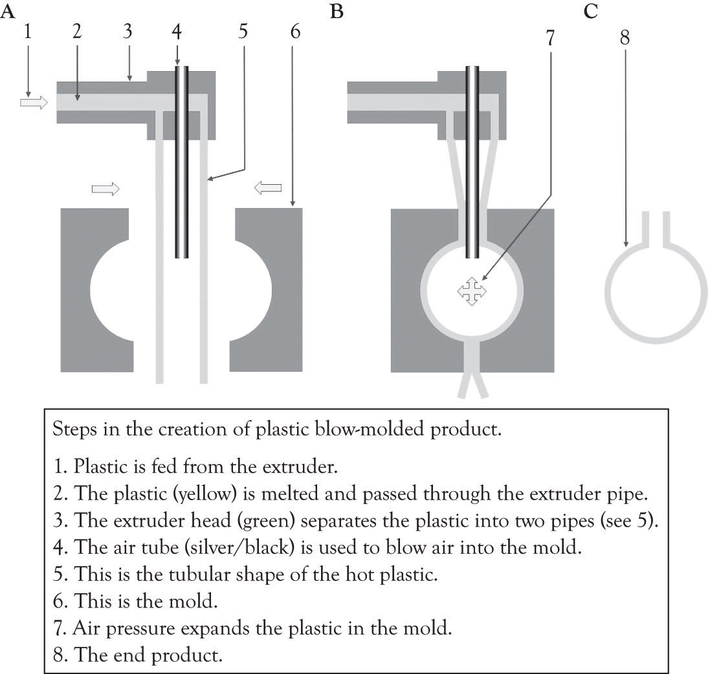
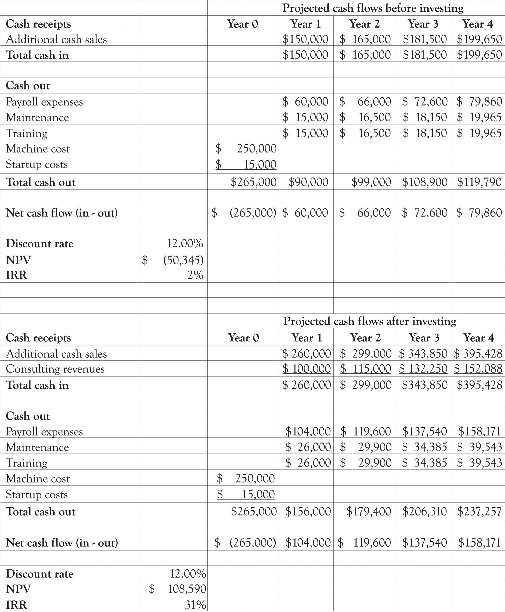
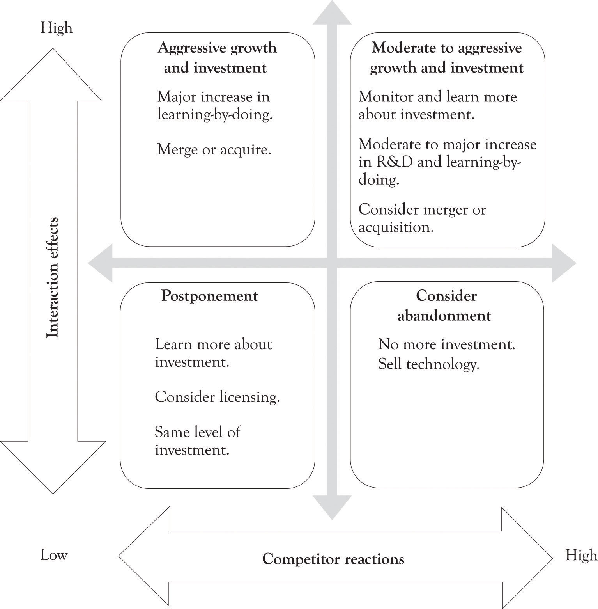

It does not matter how innovative or how much money the current business is making. There is a life cycle for products and technologies, and eventually, the business will decline unless it can find new opportunities. The business needs to be constantly re-primed with new products and services or it will fade and dissolve (see Figure 14.1 "Critical Organizational Activities During Business Life Cycle"). Critical to re-priming a business is scalability of the business. Scalability means that the business can shrink or grow very quickly with minor changes in the cost structure. Ideally, the ability to grow will not require a large change in variable costs, perhaps even decreasing variable costs and little increase in fixed costs. In addition, a scalable business should be able to handle a large influx of new customers and still be able to handle them without having to drastically change business processes. However, scalability cannot be achieved without investing money and time in stepping stones for future business that provide the business with options. For this reason, real options concepts can be used as the catalyst for differentiation and to re-prime the business pump. This chapter will focus on how real options concepts can be used as the foundation for continually reinventing the business.
Making the right investment decision on the right projects and the right products at the right time is a combination of having the right information, intuition, and luck. As Figure 14.1 "Critical Organizational Activities During Business Life Cycle" illustrates if there is a process in place for differentiation and new product development, then the decline of the business may be alleviated. There are choices and decisions to be made related to populating the product and project portfolio. These are the critical investment decisions that the entrepreneur has to make. Figure 14.2 "Risk Is Inherent as You Get Closer to the Top" illustrates that the potential profitability is greater as you climb up the inverted pyramid, but there are also greater levels of risk and uncertainty toward the top. All businesses face the following investment decisions while climbing the reward pyramid:
Figure 14.1 Critical Organizational Activities During Business Life Cycle

Figure 14.2 Risk Is Inherent as You Get Closer to the Top

Growth decision: They have the option to invest a little or a lot in new products, projects, machines, and technologies. There is a step-up in learning-about and learning-by-doing. This is the growth option and it includes a number of approaches:
There are three primary approaches for evaluating investment decisions. They are payback, discounted cash flow analysis, and real options analysis. We discussed the discounted cash flow techniques in the last chapter. The focus of this chapter is on real options analysis.
Amazon was incorporated in July of 1994.http://phx.corporate-ir.net/phoenix.zhtml?c=97664&p=irol-faq Amazon reported its first-ever profits of $5 million (a penny a share at a $12.60 closing price) in the fourth quarter 2001 over 7 years after selling its first book.http://news.cnet.com/2100-1017-819688.html I doubt that most investors using net present value (NPV) and internal rate of return (IRR) analysis would have been willing to wait so long to receive such a modest return. Profits in the fourth quarter of 2009 were $384 million (85 cents a share).http://online.wsj.com/article/SB10001424052748704878904575031504159206726.html As Jeff Bezos noted in his articulation of Amazon’s strategy:
We start with the customer and we work backward. We learn whatever skills we need to service the customer. We build whatever technology we need to service the customer. The second thing is, we are inventors, so you won’t see us focusing on “me too” areas. We like to go down unexplored alleys and see what’s at the end. Sometimes they’re dead ends. Sometimes they open up into broad avenues and we find something really exciting. And then the third thing is, we’re willing to be long-term-oriented, which I think is one of the rarest characteristics.Lyons (2010a, January 4).
NPV, IRR, and payback approaches may not be suitable for pursuing projects that will provide a competitive edge. The benefits of new technologies sometimes result in very strange NPV calculations that are either very high or very low. They are difficult to apply in situations involving emerging technologies where some level of investment is required in order to examine their long-run potential. There are inherent difficulties in data collection, decision analysis, and risk assessment when new and emerging technologies are involved. To put it bluntly, it is very difficult to apply discounted cash flow techniques for analyzing Blue Ocean markets. Real options can play an important role in developing a diversified product and technology portfolio for competing in dynamic environments.
A real optionA decision or choice to invest a little or a lot in tangible assets, products, processes, technologies, and services rather than financial instruments such as stocks. is a decision or choice to invest a little or a lot in a product, a technology, or a project. They are called real options because they are investments in tangible assets, products, processes, and services rather than financial instruments such as stocks. For financial investments, option-pricing techniques are heavily used to take into account the flexibility issue. The most popular is the Black–Scholes option-pricing model where the option value is determined by five input values of the exercise price of an option, the time to exercise date, the current price of the asset, the variance per period of rate of return on asset, and the risk-free rate of interest. If you plug all these values into the Black–Scholes option-pricing model, you would get a positive value (do not forget all options have a positive value). This is the option value. This value would be added to the NPV analysis. So, what is initially a negative NPV would become a positive NPV once the project’s option value is incorporated. This calculation looks very simple. However, investments in technology differ from those in financial assets in terms of priceability and tradability of the underlying asset. Contrary to financial investments, in technology investment situations, the price of an underlying asset is hard to know, and the underlying asset cannot be traded easily.
The purpose of a real option is to explore the potential of a product or new technology. Car manufacturers are constantly making small investments (from their perspective) in emerging technologies. They purchase real options in fuel technologies, engine technologies, drive-by-wire technologies, steering and braking technologies, advanced construction materials, and design. Sometimes they invest a little money and just search for information and try to understand whether a technology is applicable and cost-effective. Sometimes they invest a lot of money and develop full-blown prototypes using a variety of technologies and showcase the technologies in the so-called concept cars. Sometimes they decide to go whole-hog and develop a fresh line with modern features and technologies. Sometimes they just abandon a product or a technology completely.
Amazon did not just settle into the production of the Kindle e-book. They explored various technologies such as the screen technologies, the book delivery mechanism, and the file format for storing the books as well as if consumers would be interested in reading e-books.
The following example illustrates how a real options analysis can be conducted.
Jin Beans Tonic Elixirs produces exotic health drinks containing a combination of vitamins, herbs, fruit extracts, and supplements.The company used in the example is fictitious. Jin Bean is a compendium of numerous examples of actual companies that have decided to go ahead with an investment in the face of negative values for NPV. See Mauboussin (1999); Mun (2005); Trigeorgis (1996), for additional examples that also include financial calculations. The competition is fearless and they compete with a number of highly competitive vitamin water, energy drink, and sports drink and boutique drinks in the water industry. They are known for delivering healthy drinks in unique high-quality safe plastic biodegradable containers. The super high quality of their ingredients, the design of their bottles, as well as the design of their labels set them apart from the competition.
Most of their bottles are being produced overseas and because they change the design of the bottles every 2 months, the cost of design, development, and delivery is very high. They are exploring the idea of manufacturing the bottles at each of their five bottling centers in the USA. This will require the purchasing of injection blow molding equipment (see Figure 14.3 "Blow Injection Molding Diagram", for an overview of the blow molding process).
The president of Jin Bean’s assembled a group of financial analysts; the marketing department and the operations department conducted a study to ascertain the cost of switching bottle production in-house. They determined that it would cost the company an additional $1 million per year to purchase the machines, hire staff, and maintain the machines over what they are currently paying to import their bottles. Each machine costs $250,000 and will involve personnel costs and maintenance costs exceeding $100,000. No matter how they put the numbers together, they could not generate a positive NPV. Even though the figures did not look good, the presidents of Jin Bean decided to go ahead and purchase one machine and install it in Florida. The decision of Jin Bean’s president was based on her knowledge of real options analysis. By purchasing and using one machine, they were able to learn and conduct an economic experiment. The company could obtain insight and also acquire the flexibility to expand in the future as the effect of the investment on the bottom-line gets clearer and knowledge about the use of the machine is accumulated.“Permission is granted to copy, distribute and/or modify this document under the terms of the GNU Free Documentation License, Version 1.2 or any later version published by the Free Software Foundation; with no Invariant Sections, no Front-Cover Texts, and no Back-Cover Texts. A copy of the license is included in the section entitled GNU Free Documentation License.” http://commons.wikimedia.org/wiki/File:Blow_molding.png
Figure 14.3 Blow Injection Molding Diagram
Developed by Laurens van Lieshout, available under Creative Commons Attribution share license.
The result of this experiment and installation was enlightening. Jin Bean was able to generate more sales with the new injection molding machine and they were also able to provide external consulting to other businesses and to sell specialized plastic containers at a premium price. Jin Bean also used the injection machine to experiment with new bottle designs and product ingredients. In the past, it would take them a year to introduce a new bottle to the market and several months to understand the sales results. Now they were able to deliver a new product in less than a year. They were able to increase their market share and became very responsive to market demands because of their increased flexibility. The data they were able to gather by experimenting with one machine was then used to conduct an NPV and IRR analysis and resulted in a very attractive return for their investment (see Figure 14.4 "Financial Analysis Before and After Installing One Machine"). Jin Bean subsequently decided to obtain four additional machines because they have the confidence to further pursue a growth option and invest in more injection molding machines.
Figure 14.4 Financial Analysis Before and After Installing One Machine
Many real-world investment decisions are not easily analyzed with NPV and IRR analysis. Investing in a new technology can take the firm down many different paths as the organization learns about and learns by doing and experimenting with new technology and products. If you look at most of the Blue Ocean markets—for example, Cirque du Soleil, social networking services or global positioning system products—they came about as a result of experimentation and the progression of little ahas that turn into the big aha. It is basically a learning and adaptation strategy that is focused on product and process differentiation.
Business conditions are fraught with uncertainty and risks. These uncertainties hold with them valuable information. When uncertainty becomes resolved through the passage of time, actions and events, managers can make the appropriate midcourse corrections through a change in business decisions and strategies. Real options incorporates this learning model, it is akin to having a strategic road map, while traditional analyses that neglect managerial flexibility will grossly undervalue certain projects and strategies.Mun (2005), p. 16.
Real options analysis can be very technical, requiring a significant amount of financial and technical scrutiny. However, we believe that using complicated calculations is overkill for small- and medium-sized businesses. Real options concepts are nevertheless important. The takeaway from the perspective of the entrepreneur is that you need to experiment with diversifying your portfolio of products and projects under consideration. This does not mean that you have to actually buy machinery, make products, and constantly modify your business processes, but it does mean that you should learn-about many products and technologies related to your business and learn-by-doing and experimenting when an opportunity looks promising.
There are two important considerations related to real options that companies should consider before making large investment decisions. The first important consideration is how will the investment interact with current investments, and the second important consideration is how will the competition respond to an investment decision.This section is based on an article by Kim and Sanders (2002).
New investments can interact positively or negatively with existing assets of the firm. For example, when Amazon started offering electronic books (Kindle) and electronic audio (Audible), there was an obvious and natural synergy with existing content and their core competencies. These investments improved Amazon’s strong performance because they complemented existing company assets. When Amazon began adding tools and a variety of other home improvement products and then started selling groceries in certain markets and branched out into cloud computing, there were concerns related to synergy. Part of the answer relates to Amazon’s core competencies. Amazon is good at online retailing and it is very good at maintaining a very scalable and robust server and processing infrastructure. They had core competencies that were transferable to those businesses.
There are numerous examples where an investment lacked synergy with existing assets. Many believed that eBay’s acquisition of Skype was ill conceived because there did not appear to be any positive synergies between the businesses.http://dealbook.blogs.nytimes.com/2010/03/15/skype-poised-for-a-big-initial-stock-offering/ The businesses did not appear to mesh and the executives at both eBay and Skype were constantly fighting. eBay eventually sold Skype at what was considered a very modest amount. In some ways, eBay’s competitive advantage was undermined because of the relationship. The interaction effects between eBay’s assets and Skype’s assets were negative.
A new investment may force competitors to think about their existing investments and engage in counterinvestments to compete with a new investment. These competitor reactions or counterinvestments made by competitors can affect the revenue base and cost structure of a firm in the long term. This is part of the reason that first-mover advantages are transient. If a move appears to be threatening, then competitors may invest substantially more in the technology or product in order to catch up and perhaps even surpass the first mover’s investment. The net effect is that the new entrant can dilute earnings and performance. An investment that is projected to produce profits can prompt the competition to overreact and invest at higher levels than expected. These types of responses are common in the consumer electronics marketplace and, in general, are found in many types of markets.
When Amazon entered the cloud-computing market in 2006 with the introduction of Amazon Web Services, there was a definite reaction by many companies, some of them were competitors and others were just interested. Data storage vendors, CPU and hardware manufacturers, infrastructure companies, operating systems companies, service providers, consulting companies, ERP vendors and application software developers took note. Many of these companies responded by investing more and more money in cloud computing. Amazon’s continued pursuit of the growth option in cloud computing was in turn answered with many other companies pursuing a growth option in cloud computing. Dell, for example, invested more than a billion dollars in cloud computing.
Figure 14.5 "Strategic Action Framework (Modified from Kim and Sanders)" illustrates how these two dimensions can be combined to provide guidance into the investment decision process. The implication is that when there are positive interactions with existing capabilities, then growth options should be pursued. If competitor reactions are low, then an aggressive growth option should be pursued. When competitor reactions are high, then a switching-up option should be pursued. The point is if there are strong competitor reactions, a company may want to change its future investment for growth, even if the interaction effects are high.
Risk enters into the framework when the synergies between existing competencies are low and competitors are not responding. The implication is that the technology may not be important and there is little reason to pursue it if the market is not responding accordingly. The other tricky quadrant occurs in the instance where there is a competency and interaction effects and competitors are not signaling that it is important. In that instance, the product or technology may need to be monitored closely.
Figure 14.5 Strategic Action Framework (Modified from Kim and Sanders)
After a company decides on a strategic action to pursue based on the strategic action model, it needs to decide how it will proceed with the action, that is, what kind of project it will launch to implement the action, how much risk it can bare and how much of a reward it wants to gain. Most companies want to minimize risk and maximize reward in launching a project. O’Sullivan and DooleyO’Sullivan and Dooley (2008). have categorized projects in terms of their risk and reward as being pearls, oysters, bread and butter projects, and white elephants (see Figure 14.6 "Project Categorization (Modified from O'Sullivan and Dooley)"). It would be nice if all investments translated into pearls and a few ended up being successful oysters, but that is not possible. Therefore, when selecting a project, companies take into account the strategic action they will pursue. For example, if the strategic action chosen is aggressive growth, it may want to develop a project falling into the category of pearls. If the strategic action chosen is switching-up growth, it may want to develop a project falling into the category of oysters. On the other hand, if the strategic action selected is postponement, it may want to play with a bread and butter project, a small, simple, low-risk project, and wait for additional information.
Figure 14.6 Project Categorization (Modified from O'Sullivan and Dooley)

In this chapter, we have discussed real option concepts and strategic action framework. The key points are the following:
Investment decisions are never easy. Cash flows, whether they are positive or negative, are fraught with uncertainty. Selecting the appropriate discount rate is never easy, but it has a dramatic influence on the go/no-go decision. Technical analysis using discounted cash flow techniques does not alleviate the uncertainty and does not permit hunches and intuition. One student noted that his presentation in another class was marked down because he had a hunch that a company should invest in a project, even though the NPV analysis was unfavorable. After discussing the issue for a short time, I let him in on the great secret that was revealed to me by one of my mentors after I had spent days trying to justify a modest expenditure using return on investment calculations. He told me to tinker with the numbers until they fit the desired outcome. Investment in emerging technologies and a new product line rarely result in positive NPVs unless the data have been cooked. Real options when combined with the development of a product and project portfolio can bring truth, beauty, and enlightenment into the investment process.
Real options concepts can be applied in a variety of ways. Smaller organizations can focus on learning-about by investing in education, reading high-tech magazines and trade publications, attending trade shows, and attending research conferences. Larger organizations can use real options as the basis for learning-about as well as investing in basic research and using learning-by-doing strategies to develop prototypes. The important point is to keep ones options open and to develop a portfolio of investment opportunities. Important activities included in the development of the portfolio include monitoring risk and frequent monitoring and assessment of the product and project portfolio by a cross-functional team of key personnel who understand and are aligned with the business mission.